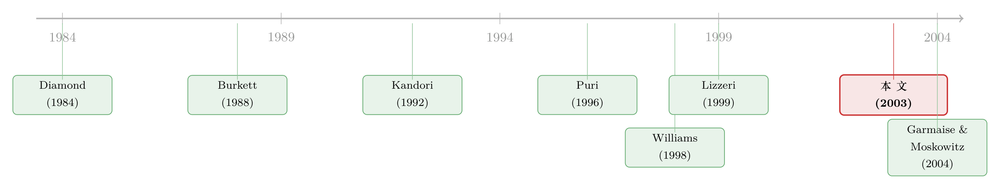

一个不放贷的掮客，凭什么把你的贷款成功率从 40% 抬到 58%？
本文读的是 Garmaise & Moskowitz (2003, Review of Financial Studies)：一个本身不出一分钱的中间人（房产经纪），靠着和银行之间长期、非正式的「关系」，能把一笔交易拿到银行贷款的概率从 40% 抬到 58%。作者先用一个无限重复博弈讲清这背后的机制，再用美国商业地产的微观数据把它验出来——结论是：哪怕在资本市场最发达的美国，能不能借到钱，依然被一张「熟脸」悄悄把着关。
1 一个看似多余的问题
先想象一个场景。
你要买下一栋商业楼，手里的现金不够，得向银行借一笔钱。按教科书的说法，美国是全世界资本市场最发达的地方：信息披露、征信体系、公开市场、竞争充分的银行业……一切都该让「好项目自然融到钱」。那么，你直接走进银行，递上材料，剩下的交给市场就好了。
可现实里，几乎没有人这么干。买楼的人会先雇一个房产经纪（property broker）。这个经纪不出一分钱、不放一笔贷款，他只是帮你「找房、谈价、跑流程」。奇怪的是——雇了这个不放贷的人，你从银行借到钱的概率，反而显著上升了。
这就引出一个看似多余、却一直没被认真回答的问题：一个本身不是资金来源的中间人，凭什么能改变你「能不能借到钱」？
这正是 Garmaise 和 Moskowitz 这篇论文的起点。他们给这种现象起了个名字：非正式金融网络（informal financial networks）。在小企业融资、农村信贷、发展中国家的中间商体系里，律师、会计、保险代理、供应商、掮客……这些「非金融的中间人」其实一直在扮演金融中介的角色。但理论上几乎没人认真给它们建模，实证上更难找到干净的证据。作者想做的，就是把这件「人人都知道、却说不清」的事，先讲成一个博弈，再量成一个数字。
2 真正的机制：把「一锤子买卖」变成「细水长流」
要理解这件事，得先把一个直觉摆正。
最容易想到的解释有三个：第一，经纪人监督银行、知道哪家银行最可能放款，于是把你领到对的门口；第二，经纪人替房产（乃至借款人）做认证（certification），像投行、风投替企业背书那样〔Puri (1994, 1996)、Brav and Gompers (1997)〕，让银行更愿意放款；第三，用经纪人的卖家往往流动性紧张、急着出手，所以不愿自己给买家提供卖方融资，逼着买家更努力去找银行。
但作者想说的核心机制，跟这三个都不一样。它的关键词只有两个字：关系。
接着，一个自然的问题是：关系为什么值钱？答案藏在「谁是长期玩家、谁是一次性玩家」这条线上。
在这个市场里，银行和资深经纪人是长期玩家（long-run players）——他们年复一年地待在这个市场里反复交手。而单个买家呢？他一辈子可能就买这一两次楼，是个不折不扣的一次性玩家（short-run player）。一次性玩家最大的软肋是：他无法对未来做出可信的承诺。 他没法对银行说「这次你帮我快点审，下次我还来」——因为根本没有下次。
经纪人恰恰补上了这个缺口。他手里攥着源源不断的客户，于是他能对银行许下一个一次性买家给不出的承诺：「你善待我的客户，我就把生意都送到你这儿来。」 这句承诺之所以可信，正因为经纪人会一直在场，明年、后年都还要和这家银行打交道。于是「一锤子买卖」被改写成了「细水长流」，而细水长流，正是合作得以维持的全部前提。
换句话说，经纪人卖给你的真正商品，不是信息、不是认证，而是他和银行之间那笔积累多年的「声誉资本」——一种你作为一次性玩家永远买不到、也建不起来的东西。
（关于「关系」本身如何重塑一国信贷的总账，可参见《银行为什么舍得先亏本拉客？——把「关系」算进一国信贷的总账》。）
3 理论：一个让合作「长」出来的重复博弈
光讲故事不够。作者把上面这套直觉，落成了一个无限重复的借贷博弈（lending game）。这一节我们一步步把它拆开——它是理解后面所有实证的钥匙。
(1) 谁在场。 市场里有四类人：需要借钱的买家、卖家、服务中间人（经纪人）、放贷人（银行）。其中银行和长期经纪人是无限期参与的长期玩家，卖家、买家、短期经纪人只玩一期。共有 i > 1 家银行、j > 1 个长期经纪人。所有人风险中性，用贴现因子 \(\delta \in (0,1)\) 对未来贴现。
(2) 项目的好坏。 一项资产对卖家的现值是 \(n > 0\)。买家分两种：好买家有一个短暂的机会，能把资产价值在下一期提升到 \((v+n)/\delta\)；坏买家则会把价值 \(n\) 据为己有、把资产掏空成零。好买家的比例是 \(p \in (0,1)\)。买家自己知道好坏，但一开始别人都不知道——这就是典型的信息不对称。
(3) 钱从哪来。 买家手里只有 \(n - I\) 的现金，需要借 \(I \in (0, n)\) 才能成交。机会转瞬即逝，买家只来得及找一家银行。若借不到，他可以低效地变卖长期资产来自筹，但要付一笔无谓的清算成本 \(c\)。
(4) 银行怎么审。 这是全篇的「机关」所在。银行有两种审批方式：
- 标准审批（standard evaluation）：能分辨好坏买家，但太慢，只有 \(q/p \in (0,1)\) 比例的好交易能赶上趟成交。努力成本为
$$ e_0 = \frac{qv}{2}. $$
- 加速审批（expedited evaluation）：同样能分辨好坏，但够快，所有好机会都能抓住。努力成本更高：
$$ e_1 \in \left(e_0,\ \frac{pv}{2}\right). $$
(5) 怎么分钱。 若买家被判定为好、机会还在，银行和买家就贷款利率讨价还价：双方同时报一个下一期的还款额，报价一致才成交。均衡里，贷款 \(I\) 的承诺还款是 \((I + v/2)/\delta\)——也就是说，加速带来的额外剩余 \(v\)，被银行和买家各分一半。这个「一半」，待会儿是整篇文章的题眼。
3.1 三条参数假设，逼出一个两难
作者加了三条假设，把这个博弈推向一个精确的两难。
第一条，银行不会闭着眼睛放贷——不评估就放款是亏的：
$$ p(v+n) + (1-p)(0) < I. $$
第二条，从社会角度看，加速审批是有效率的——它多救活的那些好交易（比例 \(p - q\)）所创造的价值，超过加速多付的成本：
$$ (p-q)v > e_1 - e_0. $$
第三条，也是最关键的一条——从银行自己一期的私利看，加速审批却是不划算的：
$$ \frac{(p-q)v}{2} < e_1 - e_0. $$
把第二、第三条放在一起看，矛盾就跳出来了：同样是 \((p-q)v\) 这块蛋糕，社会看到的是整块 \(v\)，银行却因为讨价还价只能分到 \(v/2\)。银行要独自承担加速的全部成本 \(e_1 - e_0\)，却只能拿走收益的一半。 于是一件对社会有益的事，在单期里没有任何一家银行愿意干。
我们把第三条这个「短期不划算」的核心条件，用标注的方式拆给你看：
这就是症结：站在「上帝视角」该做的事（第二条），站在「银行一期视角」却不肯做（第三条）。任何一次性的相遇里，加速审批都不会发生。
3.2 重复博弈如何「补上」缺的那一半
但真正关键的一步在于：把这个博弈无限重复下去。
作者的第一个结论（Result 1）说：只要贴现因子 \(\delta\) 足够接近 1，就存在一个子博弈精炼均衡，其中合作的「二元关系（dyadic relationship）」会自发形成——
- 一部分长期经纪人采取合作策略：把自己所有客户都引向某一家特定银行（不同经纪人可以对应不同银行），只要他每一期都这么做、且该银行此前从未怠慢过他的客户；
- 与之配对的银行，则对这个经纪人客户的贷款申请一律加速审批，并批准所有好买家——只要这个经纪人每期至少送来一个客户，且银行此前一直在加速；
- 一旦任何一方「背叛」（经纪人改送别家、或银行某次没加速），双方就退回到「谁也不合作」的标准审批状态。
直觉很清楚：银行今天为加速多付的成本 \(e_1 - e_0\)，是用未来这个经纪人持续不断的生意流来补偿的。当 \(\delta\) 够大、未来够值钱，这笔「明天的生意」就足以盖过「今天的额外成本」，合作于是变得自我维持。短期里缺的那一半收益，被重复博弈用「明天」补齐了。
而作者的第二个结论（Result 2）则像一把刀，干净地切开了「为什么是经纪人、而不是买家自己」：对任何 \(\delta\)，都不存在一个纳什均衡，让银行去加速审批一个没有经纪人的买家、或一个短期经纪人客户的申请。 道理还是那句话——一次性玩家给不出可信的未来承诺，于是银行没有任何理由为他多费力气。能撑起合作的，只有长期玩家。这就把「关系的价值」精准地钉死在了「长期 vs 一次性」这条分界线上。
注意这套机制为什么天生是非正式的。如果银行直接给经纪人付「转介费」，就会触发道德风险（经纪人会把客户导向给钱最多、而非条件最好的银行），还会撞上法律红线（如美国房地产市场含糊的 RESPA 法案）。所以合作只能以「加速审批」这种间接形式存在——客户也分享到了好处（更高的获批率），因此乐意听从经纪人的推荐。正是这层「说不清、写不进合同」的特性，让它成了一张非正式的网。
4 从模型到七个可检验的预言
模型一旦立住，预言就顺理成章地长出来了。作者把它应用到商业地产：服务中间人就是经纪人，放贷人就是银行，并假设 Result 1 描述的就是现实中的均衡。
先算两组人的获批概率。不用经纪人的好买家，以 \(q/p\) 的概率拿到贷款；拿不到的，以 $1/2$ 的概率自筹。于是在已完成的非经纪交易里，受银行融资的比例是 \(\dfrac{2q}{q+p}\)。而合作型长期经纪人的客户，所有完成的交易都拿到了银行贷款。两相比较，作者得到一组不等式（论文式 (4)），它直接给出第一个、也是最重要的预言：
预言 1：有经纪人参与的交易，更可能拿到新的银行融资。
接着，因为合作要靠反复交手来维持、而经纪人客户有限，所以合作只能集中在少数几家银行身上——于是有了预言 2：经纪人会把生意集中在少数几家银行。再往下，由于只有合作型（也就是和某家银行有长期往来）的经纪人才真正抬高获批率，便有了预言 3：与银行关系越长的经纪人，对放款的拉动越大；预言 4：经纪人会把更大比例的客户，导向与自己关系更久的银行；以及预言 5：在市场里待得越久的经纪人，对放款的拉动越大。
模型还顺手覆盖了两个有意思的边角。一是卖方融资（vendor-to-buyer, VTB）：有经纪人的买家更可能是因为「是坏类型」才被银行拒掉，卖家因此愿意给他的融资更少——预言 6：在没拿到银行贷款时，经纪交易里的 VTB 贷款规模更小。二是老贷款的承接（assumed mortgage）：经纪人若恰好和持有原按揭的银行有关系，就更可能促成银行同意「转贷」——预言 7：经纪交易更可能拿到承接式按揭融资。
七条预言，环环相扣，全部指向同一个核心：关系，而非信息或认证，是放款的开关。
5 识别：怎么洗掉「经纪人是被挑出来的」这层内生性
讲到这儿，一个尖锐的反对意见会立刻冒出来：会不会是好交易自己去雇了经纪人？也就是说，经纪交易获批率高，可能根本不是经纪人的功劳，而是「本来就容易成的好买卖才请得起、或才愿意请经纪人」——这是典型的内生性选择（endogenous selection）问题。如果不处理，回归只会把「经纪人的因果效应」和「好买卖的自我选择」混成一团。
于是真正关键的一步出现了：作者为「是否雇用经纪人」找了工具变量（instrumental variables, IV），用 Angrist (2000) 处理「虚拟内生回归元」的方法来估计。他们刻意去找一些「影响卖家是否请经纪人、却不直接影响这笔交易能否获批」的外生变量（论文在致谢里特意感谢了提供犯罪数据的 CAP Index——这类与卖家所处环境相关、却与单笔交易信贷质量无关的变量，正是这类工具的来源）。所有核心结果都是在工具化经纪活动之后得到的，因此不依赖于经纪人的内生选择。
在控制住选择效应之后，那个标志性的数字才站得住脚：雇一个经纪人，把一笔交易由银行债务融资的概率从 40% 提高到了惊人的 58%。 而且，那些把生意最集中在少数几家银行的经纪人（也就是和特定银行关系最铁的那批）对客户获批率的正向影响最强；关系越久、入行越久的经纪人，效果越显著；对银行最「忠诚」（始终如一地把客户导过去）的经纪人能把客户的获批率抬得更高，而「不忠诚」的经纪人反而会降低客户后续拿到融资的可能。预言 1 到 5，几乎被数据一条条点亮。
至于那三个备择理论（监督、认证、卖家流动性），作者说——证据相当微弱、缺乏说服力。换句话说，能解释这套现象的，主要还是「关系」本身。
6 文献脉络
把这篇论文放回它所在的谱系里，线索会更清楚。
最早，金融中介理论的主线讲的是正式中介——Diamond (1984) 那篇经典的「委托监督（delegated monitoring）」，奠定了「银行为什么存在」的理论基石，但它谈的是亲自放贷的银行。另一条线则来自发展经济学：Burkett (1988)、Cobham and Subramaniam (1998) 记录了发展中国家里，中间商网络在资本配置中扮演的关键角色——这里头已经有了「非正式网络」的影子，却缺一个干净的理论与实证。
这篇论文真正的「武器库」，来自重复博弈理论。Kandori (1992) 关于「不完美监督下重复博弈中的信息运用」的工作，正是作者证明「只有长期玩家间能维持合作、一次性玩家不行」的理论支柱。而在「中间人到底干了什么」这个问题上，另一支文献给出了认证的答案——Puri (1994, 1996) 讲银行的认证角色，Brav and Gompers (1997) 讲风投，Lizzeri (1999) 讲认证型中介的信息揭示。本文恰恰是把「认证」当作备择假设，并在数据里把它和「关系」区分开来。
再具体到房地产这块，Williams (1998) 在竞争均衡框架下分析了实物资产的代理与经纪问题。而本文的「孪生篇」——Garmaise and Moskowitz (2004)——则继续用同一套房地产数据，去攻信息不对称的问题。两篇合在一起，构成了作者用商业地产这块「实验田」研究金融摩擦的一组连续工作。

于是这篇论文的位置就清楚了：它站在「正式中介理论」和「发展中国家非正式金融」两条线的交汇点上，用重复博弈给「非正式金融网络」第一次做了严肃的建模，又用美国——这个本「不该」需要非正式网络的地方——的微观数据，把理论钉成了证据。
7 评论与延伸（Q&A + 研究方向）
(a) 几个可能的疑问
Q：经纪人的作用，和「认证」到底差在哪？
差在「靠什么起作用」。认证靠的是中间人传递了关于资产或借款人质量的私有信息，让银行更新了对这笔买卖好坏的判断；而本文的关系机制里，经纪人没有传递任何质量信息，他靠的是一个一次性买家给不出的可信的未来承诺（持续送生意），把银行的「短期不划算」用「长期划算」补上。作者也正是用数据把这两者分开——若是认证，效果不该系统性地随「关系长短、忠诚度」变化，但数据显示它恰恰随之变化。
Q：40%→58% 这个数，会不会就是「好买卖自己请了经纪人」造成的假象？
这正是作者最当回事的威胁。他们用工具变量把「是否雇经纪人」里外生的那部分剥出来再估计，所有主结果都建立在工具化之后。逻辑上，只要工具（如与卖家环境相关、却与单笔交易信贷质量无关的变量）确实满足排他性，估计出的就是经纪人的因果效应，而非选择效应。当然，IV 是否干净，最终取决于排他性约束是否成立——这是任何 IV 都绕不开的软肋（见下条）。
Q：那个工具变量的「排他性」可信吗？
这是我最想追问的地方。比如用犯罪率之类的地区环境变量做工具，前提是它只通过「影响卖家是否请经纪人」来影响获批率，而不直接影响这笔交易的信贷质量或银行意愿。但地区犯罪率很可能同时关联到房产价值、抵押品质量、当地银行的风险偏好——一旦如此，排他性就会被破坏。论文给出的是合理的辩护，但这类工具的外生性，本质上无法被完全检验，只能论证。
Q：为什么说这套合作天生是「非正式」的，不能写成正式合同？
因为一旦写成「银行付经纪人转介费」的正式合同，就会出两个问题：一是道德风险——经纪人会把客户导向出价最高、而非条件最好的银行，客户因此不再信任他的推荐；二是法律限制（如 RESPA 一度禁止贷款人就商业贷款向中介付费）。而「加速审批」这种间接回报巧妙地绕开了这两点：客户也分享到了更高获批率的好处，所以愿意配合。正是这层「写不进合同」的属性，让它停留在「关系网」而非「契约」上。
Q：既然在美国都这么重要，为什么我们平时感觉不到它？
因为它最咬人的地方，恰恰是「借款人很少借、又来不及自己和银行建立关系」的市场——创业者的第一笔贷款、个人的房贷、农民的农贷、需要银行融资的小公司。在这些场景里，借款人是天生的一次性玩家，最需要有人替他「接上」长期关系。作者的观点是：哪怕资本市场再发达，只要存在「一次性借款人」，非正式网络就有它的位置。
Q：经纪人把生意集中在少数几家银行，对借款人到底是好是坏？
模型说是好——集中是合作能维持的前提，集中度越高的经纪人对获批率的拉动越强。但这里其实埋着一个张力：集中意味着借款人被「锁」在经纪人选定的那家银行，未必拿到全市场最优的利率。本文聚焦的是「能不能借到（access）」，而不是「借得贵不贵（terms）」。把关系对贷款条件的影响也纳进来，会是个自然的延伸。
(b) 几个可能的研究问题与提案
1. 把这套「关系机制」搬到公司债的承销网络里。
【经济故事】公司债一级市场里，承销商之于发行人、机构投资者之于承销商，都像极了本文的「中间人—放贷人」结构：承销商手里攥着持续的发行流，可以对常打交道的机构许下「未来还有好券」的承诺，换取机构在冷门发行里的配合。本文的逻辑预测：和承销商关系越铁、越「忠诚」的机构，越能在抢手发行里拿到配额。 【可行性】中。需要承销商—投资者层面的配售数据（如 TRACE 配合一级市场配售记录），识别上可借鉴本文的「关系长度/集中度」变量，但工具变量更难找。Doable，但数据获取是主要门槛。
2. 外资持有人能否「租用」本地的关系网？
【经济故事】外资进入一国信贷或债券市场时，天然是「一次性玩家」——没有本地关系、给不出可信的长期承诺。本文逻辑预测：外资要么被系统性地排除在关系型信贷之外（只能拿到「挑剩的」客户），要么必须通过本地中介「租」一张关系网。这与「外资在本地市场是否处于信息/关系劣势」的争论直接相关。 【可行性】中高。可用跨国的银团贷款（DealScan）或债券持有人数据，比较外资与本地投资者在「关系密集型」与「一次性」交易中的参与差异。识别可借助本地分支机构的设立时点作为关系积累的外生冲击。
3. 当关系被「数字化」替代：金融科技会削弱还是放大非正式网络？
【经济故事】本文的机制依赖「一次性借款人无法建立关系」。若金融科技平台用算法和数据，让一次性借款人也能被快速、可信地评估，那么经纪人那张「熟脸」的价值就该被侵蚀。但反过来，平台本身也可能成为新的「长期中间人」，把关系机制换个壳重演一遍。 【可行性】中。需要某个市场里金融科技进入的外生时点（如某地区平台上线），用 DiD 比较经纪人溢价（获批率差）在进入前后的变化。诚实地说，找到干净的「进入冲击」是难点。
4. 关系抬高的是「可得性」，还是也悄悄抬高了「成本」？
【经济故事】本文证明了经纪人提高获批率，但被「锁」在少数银行的借款人，可能为这份便利付出了更高的利率——关系是一把双刃剑。把利率/利差作为结果变量重做一遍，能检验「关系到底是帮了借款人，还是帮了银行收租」。 【可行性】高。商业地产数据里若含贷款利率，直接可做；公司债/银团贷款数据里利差更易获得。这是一个对本文的直接、低成本的延伸。
8 参考文献
Brav, A., and P. Gompers (1997). Myth or Reality? The Long-Run Underperformance of Initial Public Offerings: Evidence from Venture and Nonventure Capital-Backed Companies. Journal of Finance 52, 1791–1821.
Burkett, P. (1988). Informal Finance in Developing Countries: Lessons for the Development of Formal Financial Intermediaries. Journal of Economic Development 13, 81–110.
Cobham, D., and R. Subramaniam (1998). Corporate Finance in Developing Countries: New Evidence for India. World Development 26, 1033–1047.
Diamond, D. (1984). Financial Intermediation and Delegated Monitoring. Review of Economic Studies 51, 393–414.
Garmaise, M., and T. Moskowitz (2003). Informal Financial Networks: Theory and Evidence. Review of Financial Studies 16(4), 1007–1040.
Garmaise, M., and T. Moskowitz (2004). Confronting Information Asymmetries: Evidence from Real Estate Markets. Review of Financial Studies (forthcoming).
Kandori, M. (1992). The Use of Information in Repeated Games with Imperfect Monitoring. Review of Economic Studies 59, 581–593.
Lizzeri, A. (1999). Information Revelation and Certification Intermediaries. Rand Journal of Economics 30, 214–231.
Puri, M. (1996). Commercial Banks in Investment Banking: Conflict of Interest or Certification Role? Journal of Financial Economics 40, 373–401.
Williams, J. (1998). Agency and Brokerage of Real Assets in Competitive Equilibrium. Review of Financial Studies 11, 239–280.
Angrist, J. (2000). Estimation of Limited-Dependent Variable Models with Dummy Endogenous Regressors: Simple Strategies for Empirical Practice. NBER Technical Working Paper 248.